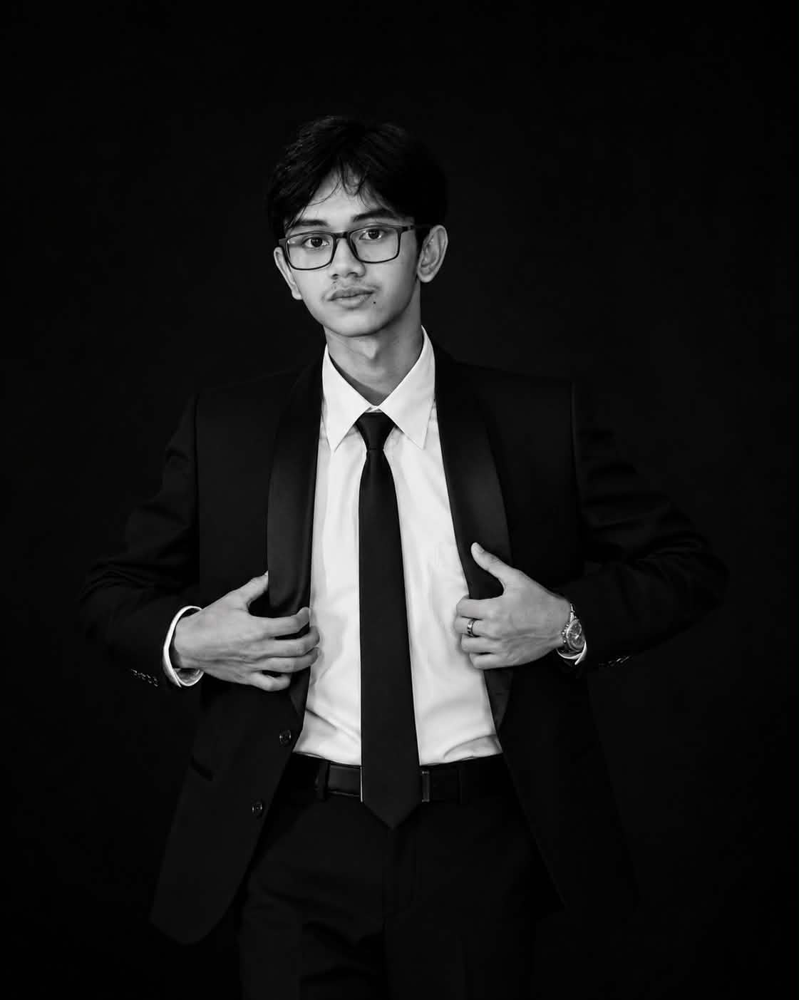

Christopher Colomer
Software Engineer
The Future, Designed to Inspire.
Software Engineer

Software Engineer

Software Engineer
At Quantum Devs, our mission is to transform ideas into innovative, reliable, and user-centered software solutions. We are committed to pushing the boundaries of technology through creativity, collaboration, and continuous learning. By writing clean code, solving real-world problems, and embracing innovation, we strive to shape a smarter, more connected future—one solution at a time.
I am a software engineer who is passionate about creating innovative and efficient solutions to complex problems. I enjoy working with a variety of programming languages and frameworks, and I am always eager to learn new technologies and techniques to improve my skills.
Date of birth: April 25, 2007
Nationality: Filipino
Email Address: christopher.colomer-25@cpu.edu.ph
Phone Number: 09482573650
Hometown: Iloilo City, Iloilo, Philippines
I am an aspiring software engineer currently learning the fundamentals of programming and building a strong foundation in software development.
Date of birth: April 14, 2006
Nationality: Filipino
Email Address: jeremy.giyangan-25@cpu.edu.ph
Phone Number: 09454538473
Hometown: Amerang Cabatuan, Iloilo, Philippines
I am a creative multimedia specialist combining video editing and software development to deliver polished, user-focused content.
I enjoy turning ideas into engaging visual stories while learning new digital tools and coding practices.
Date of birth: December 25, 2007
Nationality: Filipino
Email Address: reinwel.tingson-25@cpu.edu.ph
Phone Number: 09770768088
Hometown: Pavia, Iloilo, Philippines
Portfolio: reinmedia.my.canva.site
Resume: https://docs.google.com/document/d/1p445BrHGozXyRsY4zSMcCzgUAJ16NfALbmgKVLIEYgs/edit?usp=sharing